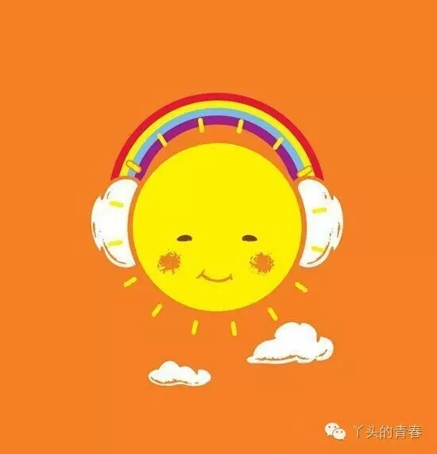

乖，摸摸头
越长大越孤单
突然之间想起了这首歌，循环反复，越听越觉得忧伤，每一句歌词都是那样的触碰着敏感的内心，勾起了很久以前的感受，那是一种“热闹是他们的”的孤单感。
正如歌词所唱的：
越长大越孤单，越长大越不安
也不得不看梦想的翅膀被折断
也不得不收回从曾经的话问自己
你纯正的眼睛去哪儿了

每次听到这首歌时，我都会想起鑫鑫，这似乎是她给我留下唯一深刻的歌曲，虽然她在寝室哼过很多歌曲，但这首歌似乎表达着她平日里落寞时的心情，现在听着这首歌，脑海里就会浮现出她孤单时的样子，她和我说过的每一句话。
三年时间里，和鑫鑫接触的时间比较多。大一那时，我们因为参加一个心理夏令营而经常走在一起，经常聊天，慢慢的彼此了解对方。三年过去了，生活中的点点滴滴大家都看在眼里，也都了解对方，也会察觉到对方的心事。
三年的时间里，总会在某个孤寂的夜晚会感到无限的孤独感，感到无限的无奈感。就会遐想，如果当初的选择不是这样，我会像现在这样吗？
其实，人在很无奈的时候总会懊悔过去所作的决定，以为换一种决定就会阳光明媚、柳暗花明似的。
也许会有那么一些些不一样吧！但也不会太好吧……这应该和自己的性格和态度有关吧！
曾听人说，我们所经历的一切，其实早已注定，这一切的安排都是对你最好的考验，都是为了磨练你的心智……所以，也不必懊恼，不必怨天尤人，这一切都是最好的，即使现在过得不如意！
之所以有这些感想，可能是以前听过她不开心时和她爸爸说的那些话吧：如果当初不来到这个学校，我现在也许不会像这样。这句话似乎引起了我的共鸣，当初在很多个瞬间，我的脑海中也产生过这些念头。那时，多么想逃离这一切，逃离那些纷繁复杂的破事……也不想面对每天听不懂也不想弄懂的课业，也不想与太多的人沟通，真的心累！
不过，这些想法最终被我埋藏在心里，最终也就释然了，因为不重要了！以前，我会写日记，记录自己的心事，可是每次回头再看时，被自己当时消极的情绪讨厌。我不是很喜欢每次看到自己消极的状态，所以，很久很久我都不写日记了。然后，时间嗖嗖的从手指缝间溜走，也没意识到……
我也不是很清楚，是不是每个人长大了都会变得孤单。只是隐隐约约地感觉到，现在的我们不再像中学时代的我们，不再那样洒洒脱脱、无忧无虑了。我们变得不愿将自己的心事与人分享，只是独自承受。有时我们脆弱的心渴望被触摸但又害怕，害怕将内心赤裸太多而受到伤害，于是我们选择独自承受。在我身边的人，她们从以前喜欢发说说、朋友圈到现在不愿发，或者只会在没有熟人的社交软件偶尔抒发一下内心的小情感，曾经我也问过她为什么？得到的答案是：不想让熟悉的人知道自己的心事。换句话说，我们不愿将自己软弱的一面展现出来，而可以展示出来的，就是自己愿意让别人看到的自己而已。
忘了是什么时候看到过一句这样的自我对白：曾经我也是有棱角的人，不知何时我变得没有了棱角，没有了个人的立场，做什么事都没那样洒脱，要照顾别人的感受，我失去了原先的自己，现在我已经不太认识这样的我了。
也许这就是长大的烦恼吧。在成长这段道路上，我们遇到的人和事都在慢慢地改变我们自己。曾经我们也许因为自己的大大咧咧而伤害了自己重要的人，从此就变得小心翼翼；曾经我们胆小懦弱而受到欺凌，也许我们会告诉自己要强大起来；曾经，我们不够好，也许在成长的路上我们会不断地变得更好……我们在慢慢的长大，一路不断地失去，不断地收获。
既然已经在成长的路上，就要勇敢的面对。当自己受伤了，就摸摸自己的头，告诉自己：乖，没关系，不放弃，加油！
最后送上另一首歌《明天，你好》
长大以后 我只能奔跑
我多害怕 黑暗中跌倒
明天你好 含着泪微笑
越美好 越害怕得到
每一次哭 又笑着 奔跑
一边失去 一边在寻找
明天你好 声音多渺小
却提醒我 勇敢是什么